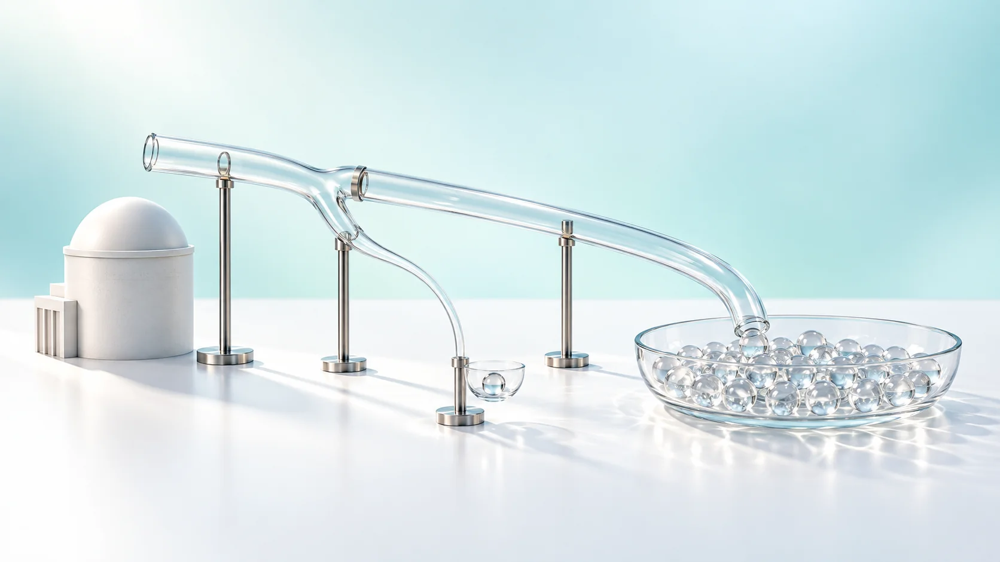
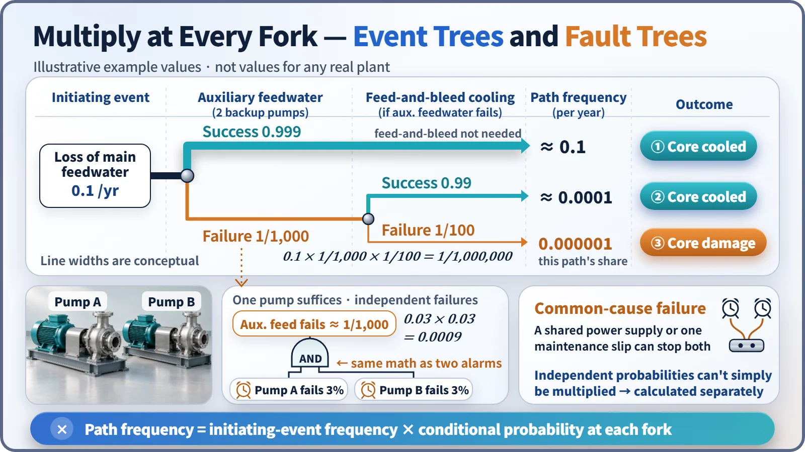
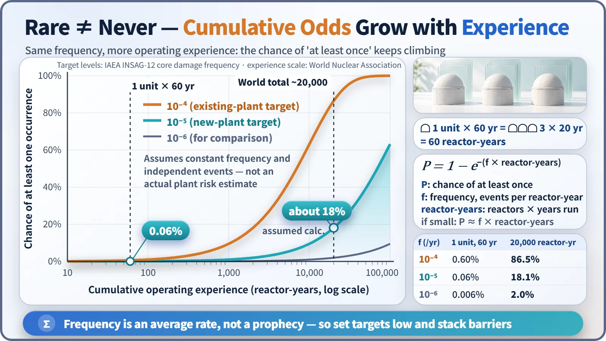

Safety Principles & Accident Analysis · 220
The Arithmetic of Two Alarm Clocks — How Probabilistic Safety Assessment (PSA) Measures Nuclear Risk
Risk is frequency times consequence. PSA multiplies its way through every fork of an accident to find where a plant is relatively weakest.

Probabilistic safety assessment (PSA) systematically finds the event sequences that could lead to an accident and calculates how often each happens and what it leads to, putting risk into numbers. Fault trees combine equipment failures, event trees multiply through each branch, and the results show which weak spots matter most. A low frequency is an average rate, not a promise that nothing will happen. [1]
A report that pointed at small things
In October 1975, the U.S. Reactor Safety Study (WASH-1400) made the first large-scale attempt to list every accident that could happen at a nuclear plant and work out how often each might occur. Its surprise: the biggest contributors to risk were not the large pipe break everyone had prepared for, but combinations of seemingly minor things, such as small leaks and human error. [1]
In 1979, at Three Mile Island Unit 2, a valve stuck open let coolant leak bit by bit while operators misread the situation, much like the type of event the report had flagged. The report's method is probabilistic safety assessment (PSA).
Two yardsticks, and one of them is "how often"
PSA starts from risk = frequency × consequence. A severe outcome contributes little if extremely rare; a mild one can't be ignored if frequent.
Deterministic safety analysis assumes a given accident and checks conservatively whether fuel and barriers hold within the criteria, a pass or fail. It doesn't say how often that accident occurs, or what happens when several systems fail together. PSA fills that gap. The two are partners, not rivals.
The arithmetic of two alarm clocks
If one alarm fails 3% of the time, the chance that both of two alarms fail is 0.03 × 0.03 = 0.0009, about 1 in 1,000: more than 30 times safer. Backup pumps work the same way: with two pumps, either of which can do the job, both must fail before the function is lost. A diagram that works backward from "what has to break for this function to stop?" is a fault tree.
The catch: two plug-in alarms on the same outlet both go quiet in one power cut. When a single cause takes out several components at once, it is a common-cause failure, and the probabilities can't simply be multiplied, so PSA calculates these cases separately.
Multiply at every fork
An event tree starts from the initiating event and splits at each response system into success and failure. With illustrative numbers (not values for any real plant):
| Step | Illustrative value |
|---|---|
| Main feedwater to the steam generators is lost | 0.1 per year (about once in 10 years) |
| Both backup (auxiliary feedwater) pumps fail | 1 in 1,000 |
| Feed-and-bleed cooling also fails | 1 in 100 (given the pumps failed) |
| Core damage path | 0.1 × 1/1,000 × 1/100 = 0.000001 per year |
Feed-and-bleed cooling pushes water straight into the reactor coolant system while letting hot coolant out through valves. The core damage branch thins to once in a million years on average; all other branches keep the core cool. The 1/1,000 and 1/100 apply "given that the previous step failed." A real PSA draws such trees for dozens of initiating events and adds up thousands of branches. [2]

Frequency all the way to core damage is PSA Level 1, the core damage frequency. Level 2 calculates how well the containment holds radioactive material after damage, and Level 3 the effects on people and the environment.
Once in 100,000 years means safe for 100,000 years?
An IAEA advisory group proposed core damage frequency targets below about 10⁻⁴ per reactor per year for existing plants and 10⁻⁵ or less for new plants. In South Korea, a 2016 Nuclear Safety and Security Commission notice set the goal that the summed frequency of accidents releasing more than 100 terabecquerels of cesium-137 be once in a million years or less. [3] [5]
But a frequency is an average rate, not a prophecy: every year carries the same small chance, and the more reactors run for longer, the more the chance of it happening at least once builds up: P = 1 − e^(−frequency × reactor-years).
| Assumed frequency (per reactor-year) | One reactor, 60 years | About 20,000 reactor-years |
|---|---|---|
| 10⁻⁴ | 0.60% | 86.5% |
| 10⁻⁵ | 0.06% | 18.1% |
| 10⁻⁶ | 0.006% | 2.0% |
About 20,000 reactor-years is the world's cumulative operating experience; the 18% assumes every reactor had the same 10⁻⁵ frequency. That's why a low target isn't the end of it: containment and accident management are layered on so that even if damage occurs, releases are prevented. [6]

The number is a map, not a verdict
PSA numbers are estimates built on component failure data and assumptions, so they always come with an uncertainty range. Where PSA shines is ranking: seeing which equipment and branches push up total risk most tells you where to inspect and upgrade first, and calculating how much risk rises when one pump is out for servicing helps pick maintenance timing. [4]
Key takeaways
PSA multiplies its way through the forks of possible accidents to estimate how often each path ends in core damage, and it treats common-cause failures separately. It isn't a verdict declaring a plant safe or dangerous, but a map of the relatively weak spots: the instinct behind setting two alarms on separate outlets, scaled up to a whole power plant.